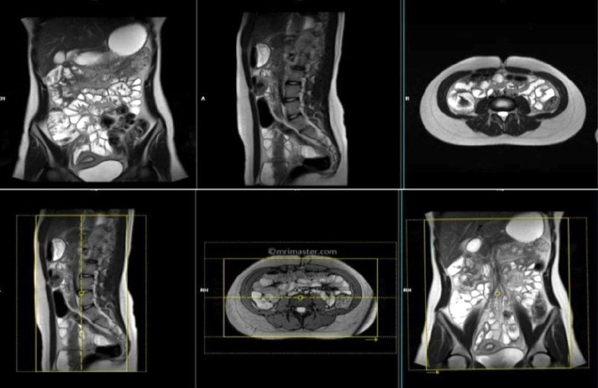
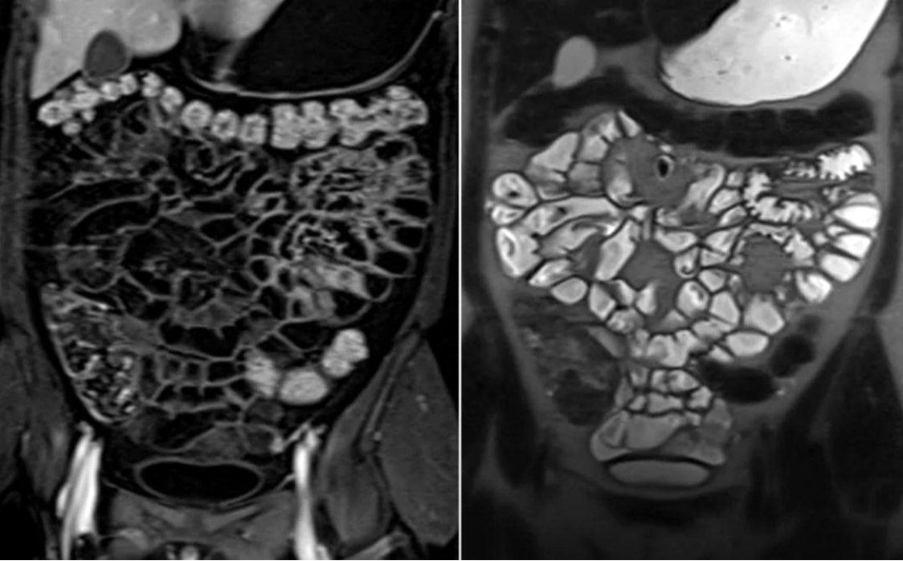
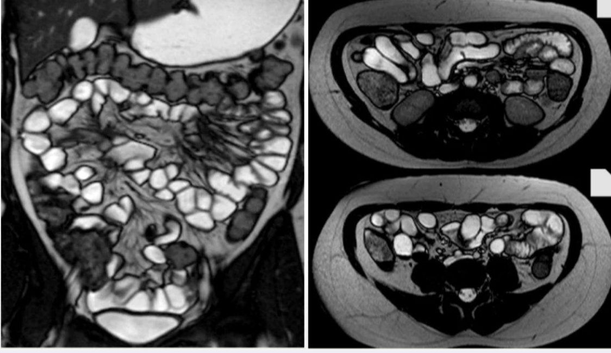

الرنين للجهاز الهضميLecture 8: MRI of the GI tract
نظري · م08 · 9.1 دقيقةأقسام المحاضرة (11)
- دواعي التصوير وموانعهIndications & Contraindications
- تحضير المريضPATIENT PREPARATION FOR GIT MRI
- مواد التباينContrast Agents
- مادة التباين الفمويةORAL CONTRAST
- مخلّبات الغادولينيومGadolinium chelates
- تشوّهات الحركةMotion Artefacts
- تسلسلات النبضPulse Sequences
- تقنية الاشتباه بناسور حول الشرجTechniques: Suspected perianal fistula
- تحديد المرحلة الموضعية لسرطان الشرج والمستقيمLocal staging of anorectal cancer
- حقنة الأمعاء الدقيقة بالرنين المغناطيسي (Enteroclysis)Small-bowel magnetic resonance enteroclysis
- الرنين لتصوير الأمعاء الدقيقة (Enterography) وصورهSmall-bowel magnetic resonance enterography
دواعي التصوير وموانعهIndications & Contraindications
الدواعيIndications:
- 1. Low grade small bowel obstruction.انسداد الأمعاء الدقيقة منخفض الدرجة.
- 2. Bowel masses.كتل معوية.
- 3. Crohns disease.مرض كرون.
- 4. Suspected perianal fistula.الاشتباه بوجود ناسور حول الشرج.
- 5. Local staging of anorectal cancer.تحديد المرحلة الموضعية لسرطان الشرج والمستقيم.
موانع الاستعمالContraindications:
- 1. Standard MRI contraindications: Any electrically, magnetically or mechanically activated implant (e.g. cardiac pacemaker, insulin pump...etc.)موانع التصوير بالرنين المغناطيسي (MRI) المعتادة: أي غرسة منشَّطة كهربائياً أو مغناطيسياً أو ميكانيكياً (مثل منظّم ضربات القلب ومضخة الأنسولين وغيرها).
- 2. Some gadolinium-based contrast agents are contraindicated in patients with known or suspected renal dysfunction.بعض مواد التباين القائمة على الغادولينيوم ممنوعة عند المرضى المعروف أو المشتبه بإصابتهم بخلل كلوي.
تحضير المريضPATIENT PREPARATION FOR GIT MRI
تحضير المريض لرنين الجهاز الهضميPATIENT PREPARATION FOR GIT MRI:
- 1. Ask the patient to remove all metal objects including keys, coins, cards with magnetic strips, hearing aid and hairpins.اطلب من المريض إزالة جميع الأجسام المعدنية، ومنها المفاتيح والعملات والبطاقات ذات الشريط المغناطيسي والمعينة السمعية ودبابيس الشعر.
- 2. Ask the patient to undress and change into a hospital gown.اطلب من المريض خلع ملابسه وارتداء رداء المستشفى.
- 3. Contrast and buscopan injection risk and benefits must be explained to the patient before the scan.يجب شرح مخاطر وفوائد مادة التباين وحقنة Buscopan للمريض قبل الفحص.
- 4. Gadolinium should only be given to the patient if GFR is > 30.لا يُعطى الغادولينيوم للمريض إلا إذا كان معدل الترشيح الكبيبي (GFR) أكبر من 30.
- 5. An intravenous line must be placed with extension tubing extending out of the magnetic bore.يجب وضع خط وريدي مع أنبوب تمديد يمتد إلى خارج تجويف المغناطيس.
- 6. Patient should fast for at least six hours.يجب أن يصوم المريض ست ساعات على الأقل.
GFR: Kidney Glomerular Filtration Rate.
معدل الترشيح الكبيبي الكلوي.
مواد التباينContrast Agents
مواد التباينContrast Agents:
Positive Agents: These include fatty oils and gadolinium. They act by T1 shortening effects and appear white on T1 images.
العوامل الموجبة: وتشمل الزيوت الدهنية والغادولينيوم. وتعمل بتأثيرات تقصير T1 وتبدو بيضاء في صور T1.
Negative Agents: These include ferrite. These act by T2 shortening effects and appear black on T2 images.
العوامل السالبة: وتشمل الفريت. وتعمل بتأثيرات تقصير T2 وتبدو سوداء في صور T2.
- • Water is a biphasic agent but is typically resorbed quickly, so a variety of formulations to increase osmolality are employed,الماء عامل ثنائي الطور لكنه يُمتص عادةً بسرعة، ولذلك تُستعمل تركيبات متنوعة لزيادة الأسمولية.
- • Air within the bowel is a natural contrast agent and is usually sufficient for rectal and anal MRI.الهواء داخل الأمعاء عامل تباين طبيعي، ويكفي عادةً لرنين المستقيم والشرج.
مادة التباين الفمويةORAL CONTRAST
التباين الفمويORAL CONTRAST:
The purpose of utilizing an oral contrast agent is to achieve specific signal intensities in the bowel lumen on different types of MRI images.
الغرض من استخدام مادة التباين الفموية هو الحصول على كثافات إشارة محددة في تجويف الأمعاء بأنواع مختلفة من صور الرنين المغناطيسي.
On T2-weighted images, the aim is to produce a high signal intensity in the bowel lumen,
في الصور المرجّحة بـ T2، الهدف هو إنتاج كثافة إشارة عالية في تجويف الأمعاء.
On T1-weighted images, a low signal intensity in the lumen is desired.
وفي الصور المرجّحة بـ T1، المطلوب كثافة إشارة منخفضة في التجويف.
The low signal intensity on T1-weighted images is particularly crucial for identifying mural enhancement on post-contrast T1-weighted images.
كثافة الإشارة المنخفضة في الصور المرجّحة بـ T1 مهمة خاصةً لتحديد التعزز الجداري في صور T1 بعد التباين.
water is mixed with a solution containing mannitol or sorbitol, better distention can be achieved. Furthermore, the addition of 5ml of Metoclopramide to the mixture significantly enhances the rate of water evacuation from the stomach.
عند خلط الماء بمحلول يحوي المانيتول أو السوربيتول يمكن الحصول على تمدد أفضل. وفضلاً عن ذلك فإن إضافة 5 مل من الميتوكلوبراميد إلى الخليط تزيد كثيراً من سرعة إفراغ الماء من المعدة.
مخلّبات الغادولينيومGadolinium chelates
مخلّبات الغادولينيومGadolinium chelates:
Represent the largest group of MRI contrast media and can either be injected intravenously or used as an oral preparation. Gd contrast agents are available in three forms:
تمثل أكبر مجموعة من مواد التباين في الرنين المغناطيسي، ويمكن حقنها وريدياً أو استعمالها كمستحضر فموي. تتوفر عوامل التباين الغادولينيومية (Gd) بثلاثة أشكال:
- 1. Extracellular fluid: (ECF) agents: By far the most commonly used form of gadolinium(e.g. Magnevist).عوامل السائل خارج الخلية (ECF): وهي الشكل الأكثر استعمالاً بفارق كبير للغادولينيوم (مثل Magnevist).
- 2. Liver agents: The excretion pathway of the gadolinium, which are taken up by hepatocytes and excreted intact via the hepatobiliary system(e.g. Primovist).عوامل الكبد: مسار إفراز الغادولينيوم، إذ تلتقطها خلايا الكبد وتُطرح سليمة عبر الجهاز الكبدي الصفراوي (مثل Primovist).
- 3. Blood pool agents: a wider range of vascular imaging (Vasovist).عوامل تجمّع الدم: نطاق أوسع من التصوير الوعائي (مثل Vasovist).
Dose: For ECF gadolinium agents, usually 0.1 mmolkg-1 body weight; up to 0.2 mmolkg-1 when used in low-field magnets.
الجرعة: لعوامل الغادولينيوم من نوع ECF تكون عادةً 0.1 ملي مول/كغ من وزن الجسم، وتصل إلى 0.2 ملي مول/كغ عند استعمال المغانط منخفضة المجال.
تشوّهات الحركةMotion Artefacts
تشوّهات الحركةMotion Artefacts:
The time taken to obtain a scan can be in the order of several minute.
قد يستغرق الحصول على المسح عدة دقائق.
If spin echo (SE) sequences are used.
إذا استُخدمت تسلسلات صدى السبين (SE).
تقليل تشوّهات الحركة الدوديةMinimize peristalsis artefacts:
Buscopan or glucagon may be used to try to minimize peristalsis.
يمكن استخدام Buscopan أو الغلوكاغون لمحاولة تقليل الحركة الدودية.
Minimize respiration artefacts: To help reduce respiratory motion of the anterior abdominal wall.
تقليل تشوّهات التنفس: للمساعدة في تقليل الحركة التنفسية لجدار البطن الأمامي.
A prone position or a compression band can be used
يمكن استخدام وضعية الانبطاح أو شريط ضغط.
The artefact, which is propagated from the anterior abdominal wall during respiration, is also due to the high signal from fat.
ينتشر هذا التشوّه من جدار البطن الأمامي أثناء التنفس، ويعود أيضاً إلى الإشارة العالية من الدهون.
fat suppression sequences can help minimize this artefact
يمكن أن تساعد تسلسلات كبت الدهن في تقليل هذا التشوّه.
تسلسلات النبضPulse Sequences
تسلسلات النبضPulse Sequences:
- • The sequences used for imaging the abdomen and GIT will depend on the nature of the clinical problem.تعتمد التسلسلات المستخدمة لتصوير البطن والجهاز الهضمي على طبيعة المشكلة السريرية.
- • Standard fast-SE T1-weighted and T2-weighted sequences (with gadolinium and fat suppression added as necessary) are often used as baseline sequences.غالباً ما تُستخدم تسلسلات SE السريعة القياسية المرجّحة بـ T1 وT2 (مع إضافة الغادولينيوم وكبت الدهن عند الحاجة) كتسلسلات أساسية.
- • They do suffer from relatively poor contrast resolution.وهي تعاني فعلاً من دقة تباين ضعيفة نسبياً.
- • The optimal plane of the sequences will be determined by the clinical problem, but axial scans are frequently used in the first instance with orthogonal planes (coronal or sagittal).يتحدد المستوى الأمثل للتسلسلات بحسب المشكلة السريرية، لكن تُستخدم المسوح المحورية غالباً في البداية مع المستويات المتعامدة (الإكليلية أو السهمية).
تقنية الاشتباه بناسور حول الشرجTechniques: Suspected perianal fistula
التقنيات: الاشتباه بناسور حول الشرجTechniques: Suspected perianal fistula
- 1. Buscopan is not routinely used.لا يُستخدم بوسكوبان بشكل روتيني.
- 2. The anal canal is angulated forward from the vertical by about 45 degrees.تميل القناة الشرجية إلى الأمام عن الوضع الرأسي بنحو 45 درجة.
- • Initial midline sagittal T2 scan is used to identify the orientation of the canal.يُستخدم مسح T2 السهمي الأولي في خط الوسط لتحديد اتجاه القناة.
- • Oblique axial and coronal high-resolution scans at right angles, and parallel to the anal canal complex, are obtained to facilitate interpretation.تؤخذ مسوح مائلة محورية وإكليلية عالية الدقة بزوايا قائمة وموازية لمعقّد القناة الشرجية لتسهيل التفسير.
- • T2W SE (with fat saturation) or short tau inversion recovery (STIR) are particularly useful sequences, butمسح T2W SE (مع تشبّع الدهن) أو الاسترداد بالانقلاب بزمن قصير (STIR) من التسلسلات المفيدة خاصةً، ولكن
- • TIW SE and occasionally scans following intravenous gadolinium using TIW with fat saturation may also assist.قد يساعد أيضاً مسح T1W SE، وأحياناً المسوح بعد الغادولينيوم الوريدي باستخدام T1W مع تشبّع الدهن.
تحديد المرحلة الموضعية لسرطان الشرج والمستقيمLocal staging of anorectal cancer
تحديد المرحلة الموضعية لسرطان الشرج والمستقيمLocal staging of anorectal cancer:
1. Patient scanned supine; Buscopan not routinely used.
1. يُفحص المريض مستلقياً على ظهره؛ ولا يُستخدم بوسكوبان بشكل روتيني.
2. Sagittal T2-weighted SE sequence of central pelvic structures. Large field of view axial T2 scan of the whole pelvis.
2. تسلسل SE سهمي مرجّح بـ T2 للهياكل الحوضية المركزية. ومسح T2 محوري بمجال رؤية كبير للحوض كله.
- • Use these scans to plan high-resolution 3-mm axial T2W images perpendicular to and also parallel to the long axis of the tumour.استخدم هذه المسوح لتخطيط صور T2W محورية عالية الدقة بسمك 3 مم عمودية على المحور الطويل للورم وموازية له أيضاً.
- • Coronal high-resolution scans are useful for low rectal tumours.المسوح الإكليلية عالية الدقة مفيدة لأورام المستقيم المنخفضة.
- • Diffusion weighted scans may also be useful.وقد تكون المسوح المرجّحة بالانتشار مفيدة أيضاً.
3. Anal cancer staging needs to include the groins.
3. يجب أن يشمل تحديد مرحلة سرطان الشرج منطقة الأربية.
حقنة الأمعاء الدقيقة بالرنين المغناطيسي (Enteroclysis)Small-bowel magnetic resonance enteroclysis
حقنة الأمعاء الدقيقة بالرنين المغناطيسيSmall-bowel magnetic resonance enteroclysis
1. Pass Bilbao-Dotter tube to DJ flexure using fluoroscopy.
1. مرِّر أنبوب بلباو–دوتر إلى الثنية الاثني عشرية الصائمية (DJ flexure) باستخدام التنظير الشعاعي.
2. Transfer patient to MR scanner and obtain venous access.
2. انقل المريض إلى جهاز الرنين المغناطيسي واحصل على منفذ وريدي.
3. Scan prone (though some centres scan supine) and obtain 'scout' localizer.
3. افحص المريض منبطحاً (مع أن بعض المراكز تفحصه مستلقياً على ظهره) واحصل على صورة محدِّدة المواضع (scout).
4. Connect Bilbao-Dotter tube to enteroclysis pump.
4. صِل أنبوب بلباو–دوتر بمضخة حقن الأمعاء.
- • Infuse (80-100 mL min-1) oral contrast under MR fluoroscopy (coronal thick-slab single-shot sequence, e.g. half Fourier acquisition single-shot turbo spin echo [HASTE] to monitor filling of small bowel to ileocaecal valve).احقن (80–100 مل/دقيقة) مادة التباين الفموية تحت التنظير بالرنين (تسلسل إكليلي بشريحة سميكة بلقطة واحدة، مثل HASTE، لمراقبة امتلاء الأمعاء الدقيقة حتى الصمام اللفائفي الأعوري).
- • Check for reflux to stomach and slow/stop if significant.تحقق من وجود ارتجاع إلى المعدة وأبطئ الحقن أو أوقفه إذا كان مهماً.
- • Stop infusion when contrast reaches colon.أوقف الحقن عندما يصل التباين إلى القولون.
5. Give Buscopan 20 mg intravenously.
5. أعطِ بوسكوبان 20 ملغ عن طريق الوريد.
6. Obtain sequences in coronal and transverse axial planes using HASTE and FISP sequences to include one fat-saturated sequence.
6. احصل على تسلسلات في المستويين الإكليلي والمحوري العرضي باستخدام تسلسلي HASTE وFISP لتشمل تسلسلاً واحداً مع كبت الدهن.
7. 3D T1W fat suppressed (e.g. volumetric interpolated breath-hold examination [VIBE] sequences pre- and postintravenous gadolinium).
7. تسلسل 3D T1W مع كبت الدهن (مثل تسلسلات VIBE) قبل الغادولينيوم الوريدي وبعده.
الرنين لتصوير الأمعاء الدقيقة (Enterography) وصورهSmall-bowel magnetic resonance enterography
الرنين لتصوير الأمعاء الدقيقةSmall-bowel magnetic resonance enterography
1. Steadily drink oral contrast (ideally 1.5 L) over 30-45 min and scan immediately.
1. اشرب مادة تباين فموية بثبات (يُفضَّل 1.5 لتر) على مدى 30–45 دقيقة وصوِّر فوراً.
2. Obtain venous access and give Buscopan 20 mg i.v.
2. احصل على منفذ وريدي وأعطِ بوسكوبان 20 ملغ وريدياً.
3. Obtain sequences in coronal and axial planes using HASTE, FISP sequences (or manufacturer's equivalent) to include one fat-saturated sequence. Coronal precontrast 3D T1W fat suppressed (e.g. VIBE).
3. احصل على تسلسلات في المستويين الإكليلي والمحوري باستخدام تسلسلي HASTE وFISP (أو ما يعادلهما عند الشركة المصنّعة) لتشمل تسلسلاً واحداً مع كبت الدهن. ثم 3D T1W إكليلي قبل التباين مع كبت الدهن (مثل VIBE).
4. Give gadolinium-based contrast agent i.v.
4. أعطِ عامل تباين قائماً على الغادولينيوم وريدياً.
5. Obtain fast 3D T1W fat-suppressed (e.g. VIBE) sequences in coronal and axial planes.
5. احصل على تسلسلات 3D T1W سريعة مع كبت الدهن (مثل VIBE) في المستويين الإكليلي والمحوري.
6. Diffusion weighted imaging may be helpful
6. قد يكون التصوير الموزون بالانتشار مفيداً.



المحاضرة مسموعة
نص الأستاذ بالإنكليزي مثل الأصل · 9.1 دقيقة. اضغط أي جملة تسمعها، أو مصطلح منقّط تسمع لفظه ومعناه.
Indications & Contraindicationsدواعي التصوير وموانعه
Indications & Contraindications
Indications:
Low grade small bowel obstruction.
Bowel masses.
Crohns disease.
Suspected perianal fistula.
Local staging of anorectal cancer.
Contraindications:
Standard MRI contraindications: Any electrically, magnetically or mechanically activated implant (e.g. cardiac pacemaker, insulin pump...etc.)
Some gadolinium-based contrast agents are contraindicated in patients with known or suspected renal dysfunction.
PATIENT PREPARATION FOR GIT MRIتحضير المريض
PATIENT PREPARATION FOR GIT MRI
PATIENT PREPARATION FOR GIT MRI:
Ask the patient to remove all metal objects including keys, coins, cards with magnetic strips, hearing aid and hairpins.
Ask the patient to undress and change into a hospital gown.
Contrast and buscopan injection risk and benefits must be explained to the patient before the scan.
Gadolinium should only be given to the patient if GFR is > 30.
An intravenous line must be placed with extension tubing extending out of the magnetic bore.
Patient should fast for at least six hours.
GFR: Kidney Glomerular Filtration Rate.
Contrast Agentsمواد التباين
Contrast Agents
Contrast Agents:
Positive Agents: These include fatty oils and gadolinium. They act by T1 shortening effects and appear white on T1 images.
Negative Agents: These include ferrite. These act by T2 shortening effects and appear black on T2 images.
Water is a biphasic agent but is typically resorbed quickly, so a variety of formulations to increase osmolality are employed,
Air within the bowel is a natural contrast agent and is usually sufficient for rectal and anal MRI.
ORAL CONTRASTمادة التباين الفموية
ORAL CONTRAST
ORAL CONTRAST:
The purpose of utilizing an oral contrast agent is to achieve specific signal intensities in the bowel lumen on different types of MRI images.
On T2-weighted images, the aim is to produce a high signal intensity in the bowel lumen,
On T1-weighted images, a low signal intensity in the lumen is desired.
The low signal intensity on T1-weighted images is particularly crucial for identifying mural enhancement on post-contrast T1-weighted images.
water is mixed with a solution containing mannitol or sorbitol, better distention can be achieved. Furthermore, the addition of 5ml of Metoclopramide to the mixture significantly enhances the rate of water evacuation from the stomach.
Gadolinium chelatesمخلّبات الغادولينيوم
Gadolinium chelates
Gadolinium chelates:
Represent the largest group of MRI contrast media and can either be injected intravenously or used as an oral preparation. Gd contrast agents are available in three forms:
Extracellular fluid: (ECF) agents: By far the most commonly used form of gadolinium(e.g. Magnevist).
Liver agents: The excretion pathway of the gadolinium, which are taken up by hepatocytes and excreted intact via the hepatobiliary system(e.g. Primovist).
Blood pool agents: a wider range of vascular imaging (Vasovist).
Dose: For ECF gadolinium agents, usually 0.1 mmolkg-1 body weight; up to 0.2 mmolkg-1 when used in low-field magnets.
Motion Artefactsتشوّهات الحركة
Motion Artefacts
Motion Artefacts:
The time taken to obtain a scan can be in the order of several minute.
If spin echo (SE) sequences are used.
Minimize peristalsis artefacts:
Buscopan or glucagon may be used to try to minimize peristalsis.
Minimize respiration artefacts: To help reduce respiratory motion of the anterior abdominal wall.
A prone position or a compression band can be used
The artefact, which is propagated from the anterior abdominal wall during respiration, is also due to the high signal from fat.
fat suppression sequences can help minimize this artefact
Pulse Sequencesتسلسلات النبض
Pulse Sequences
Pulse Sequences:
The sequences used for imaging the abdomen and GIT will depend on the nature of the clinical problem.
Standard fast-SE T1-weighted and T2-weighted sequences (with gadolinium and fat suppression added as necessary) are often used as baseline sequences.
They do suffer from relatively poor contrast resolution.
The optimal plane of the sequences will be determined by the clinical problem, but axial scans are frequently used in the first instance with orthogonal planes (coronal or sagittal).
Techniques: Suspected perianal fistulaتقنية الاشتباه بناسور حول الشرج
Techniques: Suspected perianal fistula
Techniques: Suspected perianal fistula
Buscopan is not routinely used.
The anal canal is angulated forward from the vertical by about 45 degrees.
Initial midline sagittal T2 scan is used to identify the orientation of the canal.
Oblique axial and coronal high-resolution scans at right angles, and parallel to the anal canal complex, are obtained to facilitate interpretation.
T2W SE (with fat saturation) or short tau inversion recovery (STIR) are particularly useful sequences, but
TIW SE and occasionally scans following intravenous gadolinium using TIW with fat saturation may also assist.
Local staging of anorectal cancerتحديد المرحلة الموضعية لسرطان الشرج والمستقيم
Local staging of anorectal cancer
Local staging of anorectal cancer:
1. Patient scanned supine; Buscopan not routinely used.
2. Sagittal T2-weighted SE sequence of central pelvic structures. Large field of view axial T2 scan of the whole pelvis.
Use these scans to plan high-resolution 3-mm axial T2W images perpendicular to and also parallel to the long axis of the tumour.
Coronal high-resolution scans are useful for low rectal tumours.
Diffusion weighted scans may also be useful.
3. Anal cancer staging needs to include the groins.
Small-bowel magnetic resonance enteroclysisحقنة الأمعاء الدقيقة بالرنين المغناطيسي (Enteroclysis)
Small-bowel magnetic resonance enteroclysis
Small-bowel magnetic resonance enteroclysis
1. Pass Bilbao-Dotter tube to DJ flexure using fluoroscopy.
2. Transfer patient to MR scanner and obtain venous access.
3. Scan prone (though some centres scan supine) and obtain 'scout' localizer.
4. Connect Bilbao-Dotter tube to enteroclysis pump.
Infuse (80-100 mL min-1) oral contrast under MR fluoroscopy (coronal thick-slab single-shot sequence, e.g. half Fourier acquisition single-shot turbo spin echo [HASTE] to monitor filling of small bowel to ileocaecal valve).
Check for reflux to stomach and slow/stop if significant.
Stop infusion when contrast reaches colon.
5. Give Buscopan 20 mg intravenously.
6. Obtain sequences in coronal and transverse axial planes using HASTE and FISP sequences to include one fat-saturated sequence.
7. 3D T1W fat suppressed (e.g. volumetric interpolated breath-hold examination [VIBE] sequences pre- and postintravenous gadolinium).
Small-bowel magnetic resonance enterographyالرنين لتصوير الأمعاء الدقيقة (Enterography) وصوره
Small-bowel magnetic resonance enterography
Small-bowel magnetic resonance enterography
1. Steadily drink oral contrast (ideally 1.5 L) over 30-45 min and scan immediately.
2. Obtain venous access and give Buscopan 20 mg i.v.
3. Obtain sequences in coronal and axial planes using HASTE, FISP sequences (or manufacturer's equivalent) to include one fat-saturated sequence. Coronal precontrast 3D T1W fat suppressed (e.g. VIBE).
4. Give gadolinium-based contrast agent i.v.
5. Obtain fast 3D T1W fat-suppressed (e.g. VIBE) sequences in coronal and axial planes.
6. Diffusion weighted imaging may be helpful
كل أسئلة المحاضرة: السؤال إنكليزي وتحته عربي، وكل خيار بلغتين، والجواب الصحيح معلّم ويّاه «ليش صح» · 0.5 MB
قراءة الأسئلة تحميلاضغط أي مصطلح منقّط تسمع لفظه ومعناه.